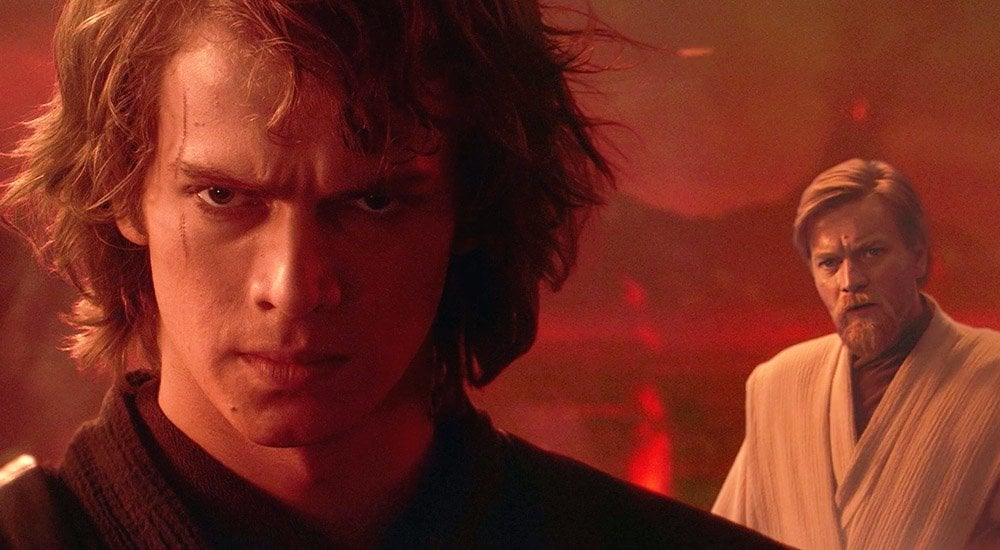

Hayden Christensen diz que “seria um prazer” voltar a interpretar Anakin Skywalker
Ator afirma que ainda tem muito carinho pelo personagem e não descarta novos projetos na franquia.
Publicado em 2026 • Redação Geek News

O ator Hayden Christensen voltou a animar os fãs da franquia Star Wars ao comentar, em uma entrevista recente, que estaria totalmente disposto a retornar ao papel de Anakin Skywalker caso surgisse uma nova oportunidade dentro do universo da saga. Segundo ele, interpretar o personagem foi uma das experiências mais marcantes de sua carreira e algo que sempre terá um significado especial em sua vida profissional.
Christensen ganhou fama mundial ao interpretar Anakin Skywalker nos filmes da trilogia prelúdio lançados nos anos 2000. Apesar das críticas mistas na época, os filmes conquistaram uma nova geração de fãs ao longo dos anos e hoje são vistos com muito mais carinho pelo público que cresceu acompanhando a ascensão e queda do personagem.
Nos últimos anos, o ator voltou oficialmente ao universo da saga ao participar da série Obi-Wan Kenobi, onde teve a oportunidade de explorar novamente o personagem em um período pouco mostrado nas produções anteriores. A participação foi bastante celebrada pelos fãs, que elogiaram a atuação do ator e a forma como a série aprofundou a relação entre Anakin e seu antigo mestre.
Durante eventos e convenções de cultura pop, Christensen tem sido frequentemente questionado sobre a possibilidade de retornar em novas produções. Em muitas dessas ocasiões, ele deixa claro que estaria disposto a revisitar o personagem caso a história fosse interessante e trouxesse novos elementos para explorar dentro do universo da franquia.
O ator também comentou que a recepção positiva dos fãs nos últimos anos mudou muito a forma como ele enxerga seu papel dentro da franquia. Segundo ele, o carinho do público ajudou a transformar completamente a maneira como os filmes da trilogia prelúdio são vistos atualmente.
Especialistas em cultura pop acreditam que o retorno de personagens clássicos é uma estratégia cada vez mais comum dentro de grandes franquias, especialmente quando existe uma forte conexão emocional entre os fãs e determinados personagens.
Com diversos novos projetos de Star Wars em desenvolvimento, muitos fãs começaram a especular sobre possíveis histórias que poderiam trazer novamente Anakin Skywalker para as telas, seja em flashbacks, séries derivadas ou novas produções ambientadas em diferentes períodos da saga.
Enquanto nada foi confirmado oficialmente, as declarações de Hayden Christensen reacenderam o entusiasmo dos fãs, que continuam demonstrando grande interesse em ver o ator retornar ao universo que ajudou a tornar um dos mais populares da cultura geek.